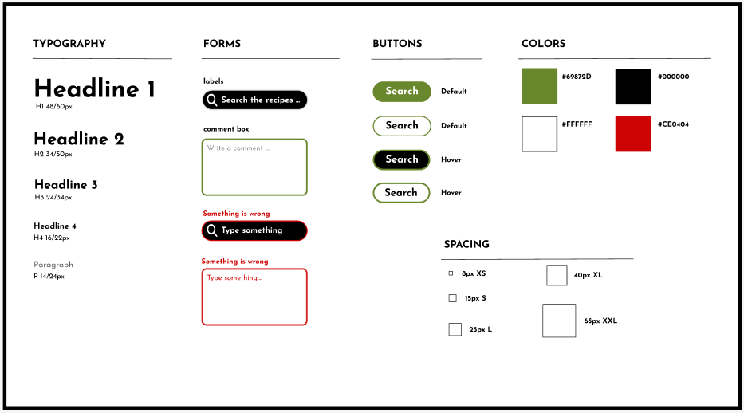
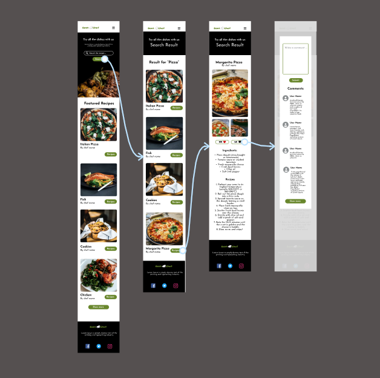

Design
I prioritized the Best Chef website. I started by designing the Homepage because of its importance and designed the existing pages. After a while, I designed three landings, each dedicated to a branch, which had a significant impact on the income and registration of the company. after that, I designed Search page for search all the recipes that user needs and then add recipes page for see the recipes. I added comment Pop-Up page for see comments and add a new comments for the recipes.
Sketch

Low Fidelity

I did the low-fidelity design. After this step, I did the usability test to find the design's errors. Then, I iterated and corrected the plans and ensured the usability test. In the next step, I started the high-fidelity designs.
High Fidelity (Mockup)



